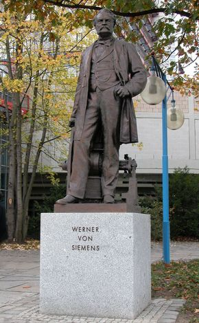
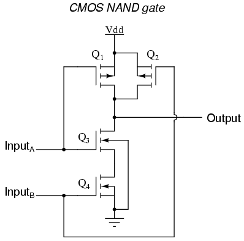
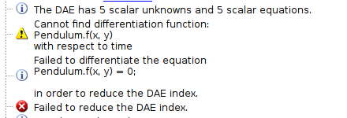

Modular Equations
AVICPS Workshop, Vancouver 2013-12-3
Outline
Motivation: 3 Missing Features in Modelica-
The Common Cause: Index Reduction -
The Solution: Automatic Differentiation
|  |
Feature I: Separate Compilation
Compile models (i.e. especially equations) once and simulate them afterwards without having to resort to runtime symbolic algebra or numeric differentiation.
Build a semantic analysis upon this foundation. Distinguish between compile-time, link-time and run-time checks.
Feature II: Structural Dynamics
Allow many different modes during simulation.Allow a model to compute the next mode. |  |
Feature III: Implementation Agnostic Integration
model Pendulum
Real x(start=0.1),y(start=0.9, fixed=true),vx,vy,F;
equation
x^2 + y^2 = 1;
vx = der(x);
vy = der(y);
der(vx) = F*x;
der(vy) = F*y - 9.81;
end Pendulum;
model Pendulum
function f
input Real x; input Real y; output Real r;
algorithm
r := x^2 + y^2 - 1;
end f;
Real x(start=0.1),y(start=0.9, fixed=true),vx,vy,F;
equation
f(x,y) = 0;
vx = der(x);
vy = der(y);
der(vx) = F*x;
der(vy) = F*y - 9.81;
end Pendulum;
model Pendulum
function f
input Real x; input Real y; output Real r;
algorithm
if (x <> 0) then r := x^2 + y^2 - 1;
else if (y <> 0) then r := y^2 - 1;
else r := -1; end if;
end if;
end f;
Real x(start=0.1),y(start=0.9, fixed=true),vx,vy,F;
equation
f(x,y) = 0;
vx = der(x); vy = der(y);
der(vx) = F*x; der(vy) = F*y - 9.81;
end Pendulum;

The Reason: Index Reduction
Index Reduction: Basics
Consider the ideal representation of the cartesian Pendulum:
Sorting equations:
(Maximizing the dots on the left-hand side)
Problem: \(x\) occurs two times derived, but is computed directly.
Pryce' Method
The dual Problem (in LP sense) to the assignment problem introduces slack variables \(\bar{c}, \bar{d}\) and a consistency condition:
where \(\sigma_{ij}\) is the highest derivative of variable \(j\) in equation \(i\)
The interpretation of \(c_i\) is the "index" of equation \(i\), i.e. the number of times it needs to be derived, \(d_j\) is the (maximal) degree of derivation of variable \(j\) in the model.
The dual goal is to minimize:
Applied to Pendulum:
Incidence matrix:
Solution:
Apply the Result
Sorting derived equations:
Note, that \(\ddot{y}, \ddot{x}, F\) form a connected component
\(n\)-times Differentiable Terms
Syntax
We start with a small term language \(t\)\(\tau \in t\), \(\phi\) is one of a set of primitive functions, \(\unk{n}{d}\) are unknowns, \(n, d \in \mathbb{N}\)
(obviously not turing-complete)
Semantics
Let \(\mathbb{D} \subseteq \mathbb{R}\) be an open interval, \(\bar{x} = (x_1 \ldots x_p) \in \xdomain\) be a vector containing \(n\)-times differentiable real valued functions on that interval.
Strict evaluation relation: \(\env \tau \reduce\ r\) indicates that \(\tau\) evaluates to \(r\) under \(\envonly\), where \(v \in\mathbb{D}\) is the independent variable.
Computing Functions:
Let \(f : \xdomain \times \mathbb{D} \rightarrow \mathbb{R} \) an \(n\)-times differentiable function, then:
(\(\tau\) computes \(f\))
Automatic Differentiation
To include AD, we parameterize \(t\) over the order of total differentiation \(n\) and number of parameters \(p\):
There is a simple relation \(\lceil r \rceil^{(n,p)}\) which lifts \(t\)-terms into \(\tnp\)-terms.
Notation
General Idea: Generalize Automatic Differentiation (e.g. Dual Numbers) to Derivative Matrices
Where:
Integration/Differentiation
\begin{align*}
\Delta \begin{vmatrix} r_{0,0} & \cdots & r_{0,p} \\
\vdots & \ddots & \vdots \\
r_{n,0} & \cdots & r_{n,p} \\
\end{vmatrix}
&=
\begin{vmatrix} r_{1,0} & \cdots & r_{1,p} \\
\vdots & \ddots & \vdots \\
r_{n,0} & \cdots & r_{n,p} \\
\end{vmatrix}
\end{align*}
Correct Evaluation
Again, a strict big step semantics \(\redad{n}\)
AD-Evaluation of a term yields correct total and partial derivatives.
Addition
Addition is simply matrix-addition
Multiplication
Multiplication is defined recursively
In the Paper:
Composition similar to Multiplication, using the chain-rule
Correctness-proof by structural induction over \(t\)
Summary
AD allows for precise, arbitrary order derivation of precompiled terms
This means, we can compile any equation into \(t^{(n,p)}\) and decide during runtime, what \(n\) and \(p\) is required.
Questions?